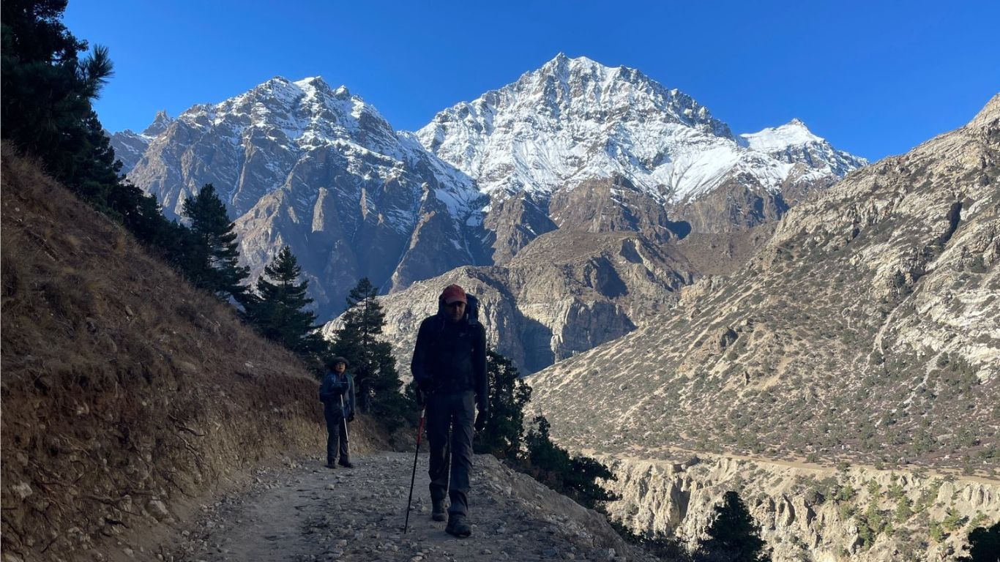
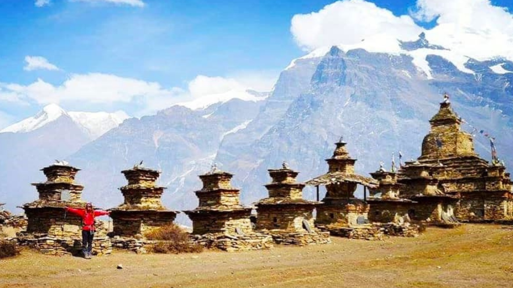
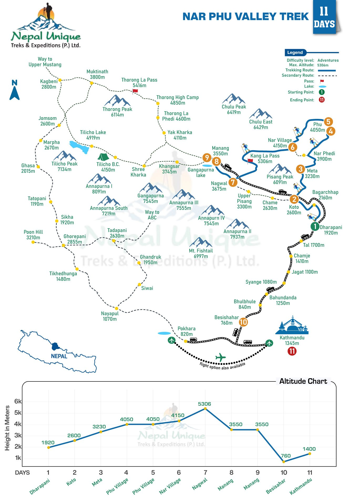

Nar Phu Valley Trek - 11 Days
of Nar Phu Valley Trek Ancient Tibetan culture thrives amid dramatic Himalayan landscapes. Hidden Himalayan Villages – Nar and Phu Authentic Tibetan Buddhist Culture Challenging and Rewarding Passes Stunning Landscapes and Scenic Trails Less Crowded, Remote Adventure Combination with the Annapurna Circuit Perfect for Adventure Seekers Overview of Nar Phu Valley Trek The Nar Phu Valley Trek Nepal is one of the most remarkable off-the-beaten-path treks in the Annapurna region, offering an authentic Himalayan adventure into two ancient Tibetan villages — Nar and Phu.





Key Trip Facts
Trek Overview
Trip Highlights
Overview of Nar Phu Valley Trek
The Nar Phu Valley Trek Nepal is one of the most remarkable off-the-beaten-path treks in the Annapurna region, offering an authentic Himalayan adventure into two ancient Tibetan villages — Nar and Phu. This hidden valley trek in Nepal reveals the untouched beauty of the Annapurna Conservation Area, where rugged landscapes, timeless Buddhist culture, and high mountain passes blend into an unforgettable journey. For those seeking remote trekking in Nepal, the Nar Phu Trek is a perfect choice, combining adventure, culture, and serenity far from the mainstream trails.
The Nar Phu Valley trekking route begins from Koto, near Chame, following a spectacular trail through deep canyons, glaciers, and stone-walled villages. Trekking to Nar Phu Valley introduces you to traditional Tibetan culture, centuries-old monasteries, and friendly locals who still follow ancient Himalayan traditions. The route covers highlights such as Naar village, Phu village, and the challenging Kang La Pass (5,320m), which offers panoramic views of Annapurna II, Gangapurna, and Tilicho Peak. The Nar Phu Valley trek altitude ranges between 2,600m and 5,320m, making it suitable for experienced trekkers seeking an adventurous yet rewarding experience.
The Nar Phu Valley Trek itinerary can be customized from 12 to 18 days, with a popular 14-day Nar Phu Valley trek option. Many trekkers also combine it with the Annapurna Circuit for an extended Himalayan journey — often referred to as the Nar Phu and Annapurna Circuit combined trek. The trek can be organized as a Nar Phu Valley teahouse trek or a camping trek, depending on your comfort and preference. Our Nar Phu Valley Trek package includes professional guides, permits, accommodations, meals, and logistics for a seamless experience.
As a restricted area trek, obtaining a Nar Phu Valley Trek permit is essential, which our team at Nepal Unique Treks will arrange for you. The Nar Phu Valley trek cost for 2025 varies depending on group size and services, but we offer affordable and flexible options. Spring and autumn are considered the best seasons for the Nar Phu Valley trek, offering clear skies, pleasant weather, and superb mountain views — ideal for Nar Phu Valley trek photography.
With its raw beauty, authentic culture, and remote charm, the Nar Phu Valley Trek with Nepal Unique Treks promises one of the best offbeat trekking experiences in Nepal, perfect for adventure seekers looking beyond the ordinary.
Best Time for Nar Phu Valley Trek
The best time for the Nar Phu Valley Trek is during spring (March to May) and autumn (September to November). These two seasons offer the most stable weather conditions, clear skies, and stunning mountain views — ideal for both adventure and photography. During spring, the trails bloom with colorful rhododendrons, and the temperatures are moderate, making it one of the most scenic times for the Nar Phu Valley trek in spring.
The Nar Phu Valley trek in autumn is equally popular among trekkers due to its crisp air, excellent visibility, and vibrant cultural festivals in the Himalayan villages. The temperature during this period ranges from mild days to cool nights, creating perfect trekking conditions. Winter brings heavy snow at higher altitudes like the Kang La Pass, and the Nar Phu Valley trek weather and temperature can become extremely cold, making it challenging.
Monsoon season (June–August) sees fewer trekkers due to rain and slippery trails, but it can still be rewarding for those seeking solitude.
If you’re planning the Nar Phu Valley trek for 2025, we recommend booking early for the spring or autumn departures, as these are the peak trekking periods offering the best off-the-beaten-path trek experience in Nepal.
Nar Phu Valley Trek Difficulty
The Nar Phu Valley Trek difficulty is considered moderate to challenging. Trekkers need to be physically fit and prepared for steep ascents, rocky trails, and high altitudes reaching over 5,320 meters. The crossing of Kang La Pass (5,320m) is one of the most demanding yet rewarding parts of the journey, offering breathtaking panoramic views of the Annapurna range.
While the trek doesn’t require technical climbing skills, it does demand good endurance and previous trekking experience at high altitudes. The Nar Phu Valley trek difficulty and preparation depend on your fitness level and acclimatization ability. Our expert local guides from Nepal Unique Treks ensure safety, proper pacing, and support throughout the trek, making it achievable for well-prepared adventure enthusiasts.
Nar Phu Valley Trek Permits
As the Nar Phu Valley lies within a restricted area of Nepal, trekkers must obtain several permits before entering. These include:
- Nar Phu Valley Restricted Area Permit (RAP) – Mandatory for all foreign trekkers, valid for a specific duration, and issued only through a registered trekking agency like Nepal Unique Treks.
- Annapurna Conservation Area Permit (ACAP) – Required for entry into the Annapurna Conservation Area, which covers the Nar Phu Valley trekking route.
- TIMS Card (Trekkers’ Information Management System) – Helps ensure safety and trekker registration.
You cannot obtain the Nar Phu Valley Trek permit independently; it must be processed through a government-authorized trekking company. Our team will handle all the necessary documentation and logistics for you. If you’re wondering how to get a Nar Phu Valley trek permit, simply contact Nepal Unique Treks, and we’ll take care of the rest.
Nar Phu Valley Trek - 11 Days Itinerary: Day by Day
11 Days program for Nar Phu Valley Trek - 11 Days. Daily timings and sequences remain flexible according to weather, flight operations, and group pace.
Day 1: Drive from Kathmandu to Dharapani (1920 meters) - 8/9 hrs
Approx. 1,920 m / 6,299 ft
The journey from Kathmandu to Dharapani (1920m) via Besisahar is a scenic adventure through Nepal’s countryside and the gateway to the Annapurna region. From Kathmandu, travelers first take a local bus to Besisahar, a 6–7 hour drive along the Prithvi Highway with views of terraced fields, rivers, and traditional villages. From Besisahar, the road becomes rough and off-road, continuing by a local sharing jeep to Dharapani. This stretch takes about 4–5 hours, passing beautiful waterfalls, suspension bridges, and charming Gurung villages—offering an exciting glimpse of Nepal’s mid-hill and Himalayan landscapes. In Option: if you need a luxury drive to Dharapani, we can arrange a private tourist vehicle, which costs an extra USD$350 for a private jeep.
Day 2: Trek from Dharapani to Koto (2600 meters) - 5 hrs
Approx. 2,600 m / 8,530 ft
From Dharapani, the Nar Phu Valley Trekking trail leads towards Koto, another scenic village of the Manang district. This village, located at an altitude of 2600 meters above sea level, offers occasional glimpses of the snow-capped Annapurna mountain range. Other than that, you can also expect the locals to offer you warm hospitality and deliciously prepared local cuisine. Talking about this section of the trek to Nar and Phu valleys, the trail follows the Marsyangdi River upstream, passing through the traditional villages of Bagarchhap, Danaque, and Timang. In all of the villages that we cross today, the trekkers can see mani walls, prayer wheels, and stone houses that reflect the region’s Tibetan cultural influence. As you ascend to almost the half of today's trek, outstanding views of the Lamjung Himal (6,983 meters) and Annapurna II (7,937 meters) catch your attention. We will arrive in the Koto village by early afternoon, where you can sense a different, more pleasant type of peace, calmness, and serenity. These villages, sitting between the Nar Khola and the Marsyangdi rivers, always have the sound of the river flowing echoed. Besides, Koto is also labeled as the gateway to the Nar Phu Valley, and this is also the point from which we begin a walk on the off-the-beaten path.
Day 3: Trek from Koto to Meta (3230 meters) - 8 hrs
Approx. 3,230 m / 10,597 ft
As you wake up on the sixth day and have your breakfast in the hotel, you have a new section of the Nar Phu Valley Trek to cover. Today we will walk for about 8 hours and ascend to an altitude of 3230 meters above sea level. Walking for such long hours certainly won't be easy. Therefore, we recommend the trekkers to be well-prepared. This section of the trek takes us through a narrow path beside the Nar Khola (river). Furthermore, the trail also passes through dense pine forests, cascading waterfalls, and prayer-flag-draped chortens nestled into the cliffs. As you keep ascending, you will gradually enter the off-the-beaten-path section of the Nar Phu Valley Trekking trail. Slowly and gradually, we rise in altitude, which means the walk starts getting more demanding. However, the alpine landscape also makes the walk more rewarding. Yes, just watch the landscape shift from forested slopes to more rugged, alpine terrain, revealing glimpses of snow-dusted peaks and barren cliffs. Once you reach Meta, a beautifully settled plateau village, surrounded by crumbling stone walls and grazing yak herds. Take your time to stroll around the village, interact with the locals, and try some local delicacies before having your dinner and sleeping.
Day 4: Trek from Meta to Phu Village (4,050 meters) - 7 to 8 hrs
Approx. 4,050 m / 13,287 ft
On the seventh day, we finally reach the highly awaited Phu Village, located at an altitude of 4050 meters above sea level. This isolated village, with its medieval architecture, centuries-old Tashi Lhakhang Monastery, and time-honoured way of life, offers an authentic taste of Tibetan culture untouched by modernity. Talking about the trail from Meta to Phu Village, it gradually ascends through an arid, high-altitude landscape and scattered remnants of old Tibetan settlements. Furthermore, the trail also passes through some traditional Khampa herders’ shelters and picturesque mani walls. In the final stretch of this section of the Nar Phu Valley Trekking map, we will cross several suspension bridges, the best part of trekking in Nepal. In a little while, you start seeing the secluded Phu village. Besides, in the evening, you can come out of your hotel rooms and stroll around the village. See the children playing, people gathering around to have some quick chit chats, and other people doing their regular chores. After that, you can return to the hotel for a fulfilling dinner before heading for a relaxing sleep in the Phu village.
Day 5: Excursion around Phu Village and Visit the Tashi Lakhang Monastery.
Approx. 4,050 m / 13,287 ft
Did you realize that we are currently at an altitude of 4,050 meters above sea level? From here, you will sense a decrease in oxygen level and an increase in the risk of altitude sickness. For that reason and to explore the Phu village, the eighth day will be an acclimatization day or excursion day. Wake up early in the morning, have your breakfast, and then we will go for a quick excursion to the Phu village. In the morning, we will walk around the narrow stone-paved alleys of the village, observing the daily chores of locals. After that, the Nepal Unique Treks & Expeditions' guides take you for a visit to the Tashi Lakhang Monastery. This beautiful, sacred, and significant monastery sits peacefully at an altitude of 4150 meters above sea level. Other than experiencing the peace and delving deep into the religious charm of the monastery area, you can also enjoy some mesmerizing views of the panoramic village below. About the Tashi Lakhang Monastery The Tashi Lakhang Monastery is believed to be the oldest and most sacred monastery in the region. Besides, this monastery also holds immense spiritual significance, having been blessed by the revered 8th-century tantric master Guru Rinpoche. Regardless of which day you choose to visit the Tashi Lakhang Monastery, you will always see Gurus performing rituals and puja. Besides the monastery itself, the trekkers can also sit quietly in the halls of the Monastery. The pleasant scent of juniper incense mingling with the hum of chanting monks takes you to a world of peace and calmness. In the evening, you can sit peacefully in the village, talk with the locals, and see the kids playing, cattle returning home, and people chatting. After that, return to the hotel, have your dinner, and go for a cozy and comfortable sleep.
Day 6: Trek from Phu to Nar Village (4,150 meters) - 7 to 8 hrs
Approx. 4,150 m / 13,615 ft
Another day calls for another outstanding adventure in the Nar Phu Valley Trekking route. On the ninth day, we leave Phu and go for a journey towards Nar Village. The Nar village stands as another significant checkpoint in the Nar Phu Valley Trekking map, settled at an altitude of 4150 meters above sea level. It takes about 7 to 8 hours for us to walk to cover this section. Besides, this section of the trail also goes through a less-trodden route. Crossing high mountain passes and suspension bridges, walking over deep gorges, and wide-open pastures will certainly make you feel relaxed. On your way, you also get to witness yaks grazing and even blue sheep. As you start approaching Nar village, you can witness the landscape opening up to reveal a charming and relatively larger settlement. Here, the houses are mostly whitewashed and stay clustered neatly beneath soaring cliffs. Just as you walk towards your hotel, you can see many rows of prayer flags fluttering and the villagers offering a warm welcome. Check in to your room, store your belongings, and then you can take your time to explore the village. That's when you realize how traditionally and culturally decorated this remote settlement is.
Day 7: Trek from Nar via Kang La Pass (5,306 meters) to Ngawal (3,675 meters) - 8 to 9 hrs
Approx. 5,306 m / 17,408 ft
Get ready to go on one of the most difficult, strenuous, and, of course, the most outstanding walks of the entire Nar Phu Valley Trekking journey. Yes, it's finally the time to ascend to one of the highest mountain passes, the Kang La Pass, located at an altitude of 5,306 meters above sea level. However, that will not be the only destination we reach on this day. Yes, on the tenth day we will end the walk in a village named Ngawal. As you wake up early in the morning, the guides take you through some barren slopes and rocky ridges. With each step, you can expect the views to open up and expand. Just wait until you reach the final stretch of the Kang La Pass hike, one of the toughest yet rewarding sections of the entire Nar Phu Valley Trek. Once you step your foot on the top of the Kang La Pass, you are rewarded with breathtaking, panoramic vistas of the Annapurna massif, including Annapurna II, Gangapurna, Tilicho Peak, and Chulu East. Capture as many photos and videos as possible, and yes, also remember to enjoy every moment you spend there. After that begins the descending walk towards Ngawal through a long, steady trail stretching across alpine meadows and scree slopes. Eventually, the trails become gentler and start getting lined with juniper bushes and stone-built villages. Gradually, the trekkers can feel the air getting thicker and the surroundings becoming greener. It takes about 8 to 9 hours for us to complete today's walk, which will certainly make you a lot more tired than on any other day. Therefore, you shall enjoy a fulfilling dinner and go for a relaxing sleep.
Day 8: Trek from Ngawal to Manang (3,550 meters) - 4 hrs
Approx. 3,550 m / 11,647 ft
Well, we have ascended to the highest point of this 16-day trek to the Nar Phu Valley. So, from the eleventh day, we begin descending the trail. It takes about 4 hours for us to reach one of the most beautiful villages in this region, Manang. Located at an altitude of 3,550 meters above sea level, this village sits comfortably at the edge of the cliff in the north of the Annapurna range. Also, let us tell you that Manang is one of the most popular Trekking Destinations in Nepal. As you leave Ngawal, you can find yourself walking through traditional stone villages, lush farmland, and ancient monasteries. Furthermore, the jaw-dropping backdrop of the Annaurna range keeps you motivated and cool enough to walk on this trail. Along the way, you also pass through several other villages, including Braga, a village known for its beautiful monastery. After reaching Manang and checking in at the hotel, we recommend that the trekkers stroll around the village. You'll certainly have a lot of opportunities to click photos and make videos while spending time in the tea houses, bakeries, and watching the panoramic views. Besides, this place is also a heaven in the cultural aspect. As it only takes about 4 hours to reach Manang, you can spend the rest of the day exploring the village, or visiting the local monastery before returning to the hotel for dinner and sleep..
Day 9: Explore around Manang village, Local sightseeing
Approx. 3,550 m / 11,647 ft
Imagine being in one of the most beautiful Himalayan villages and not even spending a day here. Well, that's not what Nepal Unique Treks would do. We would certainly want you to explore the village and also take rest before descending any further on the Nar Phu Valley Trek. Therefore, we will stay in Manang on the twelfth day as well. Make the full out of this day as you will have a whole day to delve deep into the natural, cultural, and traditional beauty of this village. Do you know what one of the best things about this village is? Well, it's the way people live, the fusion of Tibetan and Nepali culture. Besides, you can also stop by the Himalayan Rescue Association's aid post for an informative talk on high-altitude acclimatization. If you want to add more to the adventure of the day, the guides will also take you for a quick hike to the Gangapurna Lake or the Chongkor Viewpoint. Regardless of what you choose to do on this day, the Manang village ensures adventure, thrills, and an in-depth experience of the culture. Alternative Trekking Routes, or continue trek to Thorong La Pass 5416m, Available
Day 10: Drive from Manang to Besisahar 110 km, 7/8 hrs
Approx. 760 m / 2,493 ft
The drive from Manang to Besisahar is a thrilling journey through the rugged landscapes of the Annapurna region. The off-road route winds along narrow mountain trails, passing through charming villages, waterfalls, and deep gorges. As you descend from the high-altitude valley of Manang, you’ll witness dramatic changes in scenery—from arid Himalayan terrain to lush green hills. The drive takes around 6 to 7 hours by local jeep, depending on road conditions. Though bumpy and adventurous, it offers breathtaking views of snow-capped peaks and the Marsyangdi River, making it an unforgettable part of your trekking experience in Nepal.
Day 11: Drive to Kathmandu from Besisahar 6/7 hrs, 1345m
Approx. 1,345 m / 4,413 ft
On the fifteenth day, we finally return to Kathmandu on a local sharing bus. It will be another thrilling and adventurous drive on the highway. Watching the scenarios, passing through different settlements, and driving beside the river, we make our way to Kathmandu. As you reach Kathmandu, the local representatives will take you to the hotel, where you can freshen up. After that, go around the city area, check out some cafes, hotels, and restaurants. At night, you can also enjoy the nightlife in Thamel and visit some clubs in that area. However, before that, the Nepal Unique Treks and Expeditions team invites you for a farewell dinner, where we will also provide you with certification.
What is Included (Regular Package)
What is Excluded
Booking Dates & Availability
Packing List for Nar Phu Valley Trek - 11 Days
Essential Info: Down jackets and sleeping bags can be rented/arranged per package inclusions.High-Altitude Trail Gear (6 items)
Cold-Weather Layering System (5 items)
Sleep, Health & Permits (3 items)
Read before you book: Nar Phu Valley Trek - 11 Days
Practical logistics derived directly from this package's route facts, inclusions, and elevation profile.
Accommodation & Meals (Hotel, Lodge & Tea House)
Accommodation follows the package grade (Hotel, Lodge & Tea House) in Kathmandu and along the Annapurna route. Check your package Includes section for included meals and Kathmandu hotel nights.
Permits & Local Logistics
Transportation is arranged via Local Sharing Bus, Jeep, Van. Applicable permits listed in the package inclusions are arranged by Nepal Unique Treks prior to departure.
Route Difficulty & Elevation (5306 m)
Nar Phu Valley Trek - 11 Days is rated Adventurous with a maximum elevation of 5306 m. Follow your guide's pacing and stay hydrated throughout the 11 Days itinerary.
Best Time to Visit (Spring, Monsoon and Autumn)
Recommended operating season on the source page: Spring, Monsoon and Autumn. Additional official notes from the source page follow below.
Traveller Useful Information
The best seasons to go for the Nar Phu Valley Trek are spring (March to May) and autumn (September to early December).
Both of these seasons are perfect for Trekking in Nepal due to clear skies, spectacular mountain views, and longer daylight hours. Besides, if you trek in any of these seasons, you can also expect stable weather and, not to mention, the excellent visibility of sky-towering mountains. Moreover, Nepal also celebrates some major festivals like Dashain and Tihar in the autumn season, adding a rich cultural flavour to the experience. One of the best things is that ascending to the highest point, the Kang La Pass 5306m, also becomes comparatively easy and pleasant. That is because these regions experience comparatively less snowfall than in comparison to the winter season.
If you seek a little extra adventure and thrill, you can also book the Nar Phu Valley Trek during the winter season. However, in winter, you must be ready to face some heavy snowfall and very slippery trails. Besides, you might also not get proper views as the weather remains foggy throughout the day. In contrast, trekking in the summer can again be difficult because of the burning sun rays. Moreover, the Nar Phu valley trek might also experience rainfall, making it strenuous for the trekkers to ascend the trail.
The Nar Phu Valley Trek is considered moderately challenging to strenuous. However, the difficulty level of this trek also depends highly on how to train and practice for the walk. Let us tell you that this trek demands stamina and endurance. The trekkers need to walk for 6 to 9 hours on average every day through some remote and rugged trails and high-altitude crossings. Ascending to the Kangla Pass marks the most difficult part of the entire Nar Phu Valley Trekking itinerary.
Besides, the trekkers also spend a few days above an altitude of 4,000 meters above sea level. Therefore, we recommend you be cautious about altitude sickness. Some sections involve steep ascents and descents, rocky paths, and narrow ridgelines. Moreover, you will also get exposed to high passes, all requiring sure-footedness and a good level of physical fitness. Nevertheless, with proper preparation and timely acclimatization, the trail certainly becomes more of an adventure than difficult or strenuous.
As the Nar Phu Valley Trek is considered to be moderately difficult to challenging, the trekkers must prepare very well for this package. Without proper preparation and planning, one might face a lot of difficulties and obstacles as well. So, we recommend all the trekkers to be very mindful while preparing for the Nar Phu Valley Trek.
Here are some of the most important steps to prepare for this trekking journey:
Physical Preparation: You must build strong endurance to make this trek comparatively easy. For that, we recommend starting running, hiking, cycling, stair climbing, and other physical exercises at least 8 to 12 weeks before the trek.
Mental Preparation: As this trekking route takes us through some of the most remote conditions with basic facilities, you must also be mentally prepared for that. We recommend the trekkers to go for meditation to be mentally fit and yoga for flexibility.
Altitude Acclimatization: Participating in the Nar Phu Valley trail means ascending over 5000 meters above sea level. This level of altitude also increases the risk of altitude sickness. Therefore, you must plan acclimatization properly to stay safe from the chances of altitude sickness and related health issues. Also, remember to keep yourself as hydrated as possible.
Logistics: Hiring a proper and government-approved trekking agency with a valid license is mandatory for the Nar Phu Valley Trekking journey. Besides, you must also arrange all the permits before ascending the trail to ensure safety and a secure trekking experience.
Essential Gear Checklist: Last but not least, you must also check the backpack a couple of times and ensure that you include all the necessary documents and paperwork along with the essential gear.
Food and accommodation stand as two of the major factors to make any trekking journey sustainable, comfortable, and adventurous. Without hygienic, healthy food and cozy and comfortable accommodation, there are high risks of trekkers losing concentration and facing many difficulties. Therefore, the Nepal Unique Treks and Expeditions team ensures to arrange the best food and accommodation throughout the Nar Phu Valley Trek.
The package that you book with us covers a three-time meal (breakfast, lunch, and dinner) and accommodation in some of the well-maintained tea guesthouses or hotels. These accommodation hubs offer a variety of food, including milk, tea, coffee, bread, jam, omelet, Nepali Khana set, seasonal fruits, and different local as well as international cuisines. Besides, you can also expect comfortable and cozy guesthouses and tea houses that also offer secondary facilities like WiFi, internet, electricity, and hot water for showers. When such food and accommodation come together, they certainly add up to the best trekking experience in the Nar Phu Valley Trail.
Packing for the Nar Phu Valley Trek is one of the most important thing to do. All the trekkers must be very careful and mindful while deciding what to and what not to include in the backpack. Smart packing can assist you go for a more light-weighted trekking experience. Ultimately, you will only have to concentrate on walking without much weight on the back.
Here is the list of everything that you shall include before heading commencing on the Nar Phu Valley Trek:
Clothing:
Base Layers:
2–3 moisture-wicking t-shirts (synthetic or merino wool)
2 thermal tops and bottoms (for sleeping and cold trekking days)
Insulation Layers:
Fleece jacket or softshell jacket
Lightweight down jacket (for evenings and high passes)
Outer Layer:
Waterproof, windproof jacket (Gore-Tex or similar)
Waterproof trekking pants
Trekking Pants and Shorts:
2 pairs of durable trekking pants
1 pair of comfortable shorts (optional for lower elevations)
Underwear and Socks:
5–6 pairs of trekking socks (wool or synthetic)
4–5 pairs of quick-drying underwear
Accessories:
Warm beanie or woollen hat
Sun hat or cap
Neck gaiter or buff
Warm gloves (plus a lightweight liner glove)
Footwear:
Sturdy, waterproof trekking boots (well broken-in)
Lightweight sandals or camp shoes (for evenings)
Sleeping:
Four-season sleeping bag (rated to at least -15°C)
Sleeping bag liner (optional, for extra warmth and hygiene)
Trekking Gear:
Trekking poles (highly recommended for Kang La Pass)
Backpack (50–65L for porter or yourself)
Daypack (20–30L for essentials during trekking)
Rain cover for a backpack
Dry bags or ziplock bags (to keep gear dry and organised)
Personal Items:
Water bottles (2 x 1L) and/or hydration bladder
Water purification tablets, filter, or SteriPen
Headlamp with spare batteries
Sunglasses (UV protection, high-altitude rated)
Sunscreen (SPF 50+) and lip balm with SPF
Basic first aid kit (include altitude sickness medication if needed)
Personal toiletries (toothbrush, toothpaste, biodegradable soap, quick-dry towel, wet wipes, hand sanitiser)
Lightweight travel towel
Toilet paper (not provided in teahouses)
Health and Safety:
Diamox or other AMS-prevention medication (consult your doctor)
Personal prescription medications
Blister treatment (moleskine, tape)
Electronics:
Power bank or solar charger
Charging cables
Universal travel adapter
Documents and Money:
Passport (plus photocopies)
Permits: Nar Phu Restricted Area Permit, Annapurna Conservation Area Permit (ACAP)
Travel insurance (must cover high-altitude trekking and helicopter evacuation)
Cash (Nepalese rupees), as there are no ATMs in Nar Phu!
Optional Extras:
Lightweight book, Kindle, or journal
Lightweight snacks (protein bars, trail mix, chocolates)
Small thermos flask (for tea or coffee)
Gaiters (for snow sections, depending on season)
Did you read the complete Nar Phu Valley Trekking package? SO, are you ready to ascend on this adventurous and off-the-beaten trekking trail in Nepal? In that case, we recommend that you not waste any more time and book the Nar Phu Valley Trek with us right away! Booking this package with Nepal Unique Treks & Expeditions is very easy. All you need to do is scroll to the top of this package page, check the cost, and then click on the BOOK NOW button. Besides, you can also directly connect with us via WhatsApp or Zalo, and even send us your queries to our email address, which is info@nepaluniquetreks.com, nepaluniquetreks@gmail.com. Our representatives and officials will be there to help you at any time.
So, don't waste any more time, just book the Nar Phu valley trek with Nepal Unique Treks & Expeditions and secure your Himalayan journey as soon as possible.
Altitude Profile of Nar Phu Valley Trek - 11 Days
Weather on Nar Phu Valley Trek - 11 Days
Nar Phu Valley Trek - 11 Days Route Map

Book This Trek
Contact our Kathmandu coordinators using the booking panel for private or fixed-group departures.
Trip Feedback
Explore verified traveller stories or leave feedback on Nepal Unique Treks.
Visit Nepal Unique Treks